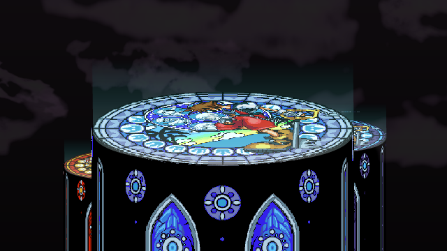
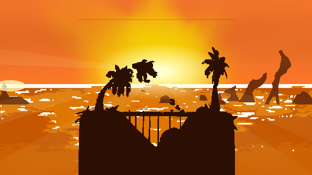
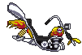
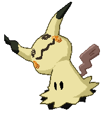
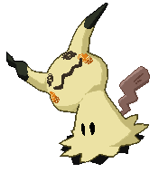
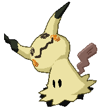

🧩 Mods SSF2 — Project PS
Stages personnalisés
Stages créés pour Super Smash Flash 2 (fangame Smash Bros).



SSF2
Modding
Special Movie — Project PS
Vidéo spéciale présentant l'identité et l'ambiance du mod Project PS.
Special Movie SSF2🎮 Game Development — Godot

💻 Projets GitHub
Custom AI Discord Bot
Bot Discord IA personnalisable (Groq, Gemini, mémoire persistante).
🔗 Voir le projet GitHub🎨 Pixel Art
Sprites & Assets
Pixel art utilisé pour le modding et le game dev.

 



Pixel Art

🛠️ Compétences
Python · GDScript · JavaScript · HTML · CSS